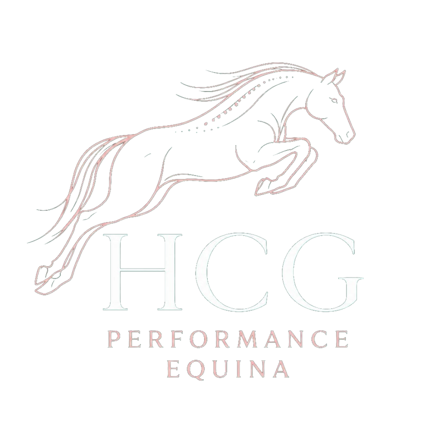
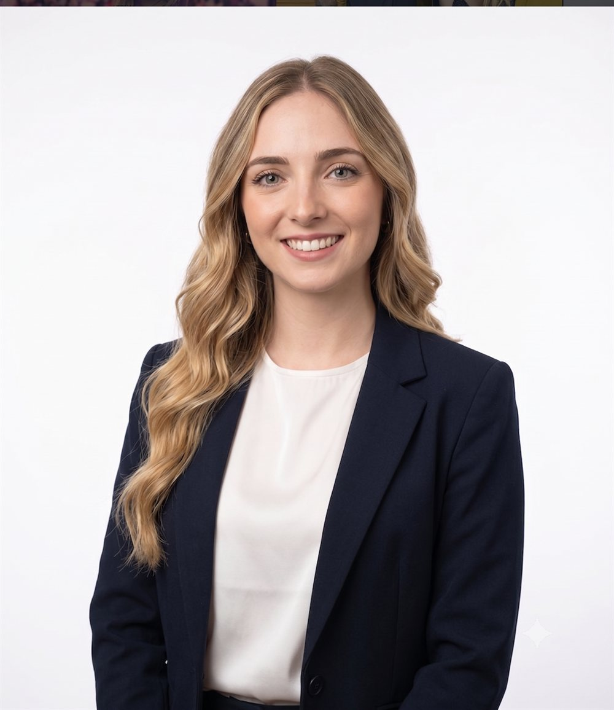

Nasce a

Excelência em movimento.
Performance e bem-estar
M.V. Helena Cafasso Galli · São Paulo

Quem é
Helena Cafasso Galli é médica veterinária (M.V.) especializada em fisioterapia, reabilitação, quiropraxia e acupuntura equina, com atendimento em São Paulo e região.
Amazona e profissional do esporte hípico, une avaliação clínica criteriosa e protocolos individualizados para devolver função, movimento e desempenho ao cavalo atleta — da prevenção à recuperação de lesões. O propósito da HCG: excelência em movimento, performance com bem-estar.
O que fazemos
Quatro frentes integradas — medicina veterinária, fisioterapia, quiropraxia e acupuntura — para prevenção, tratamento e performance do cavalo atleta.
Avaliação clínica e acompanhamento da saúde do cavalo, com foco em prevenção e performance.
Recuperação de lesões e recondicionamento com protocolos que devolvem função e movimento.
Ajustes que restabelecem o equilíbrio da coluna e das articulações, aliviando dores e travamentos.
Estímulo de pontos específicos para controle da dor, relaxamento e melhora do desempenho.
Parceria
Helena representa a Biomecore, unindo tecnologia e biomecânica ao cuidado equino de alta performance.
@biomecoreDúvidas frequentes
A fisioterapia equina recupera cavalos após lesões e cirurgias e recondiciona o físico do cavalo atleta. O trabalho usa protocolos individualizados de reabilitação para devolver função, movimento e desempenho, além de prevenir novas lesões.
A quiropraxia é indicada quando o cavalo apresenta dor ou travamento na coluna, assimetrias de movimento, resistência ao comando ou queda de rendimento. Os ajustes restabelecem o equilíbrio da coluna e das articulações.
A acupuntura estimula pontos específicos para controle da dor e relaxamento muscular, complementando o tratamento clínico e contribuindo para a melhora do desempenho esportivo.
A responsável é a M.V. Helena Cafasso Galli, médica veterinária com formação em fisioterapia e reabilitação equina, quiropraxia e acupuntura. Ela também é amazona e embaixadora da Biomecore.
O atendimento cobre São Paulo e região. Agendamentos e informações pelo WhatsApp ou pelo Instagram @hcg.performance.
O agendamento é feito diretamente pelo WhatsApp, pelo botão de agendamento no site, ou por mensagem no Instagram @hcg.performance.
Agende sua avaliação
Atendimento em São Paulo e região. Agendamentos e informações direto pelo WhatsApp.
Agendar pelo WhatsApp